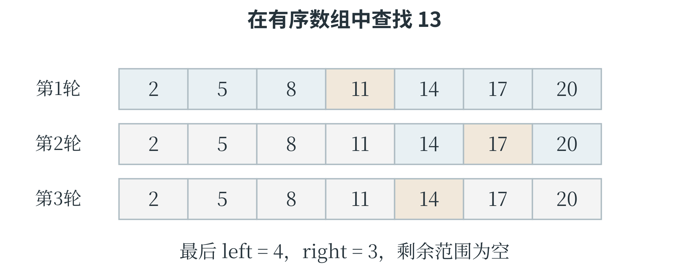

4.2 枚举与查找
把可能性逐一检查
在一个有限范围内依次列出候选答案，并检查哪些符合条件，称为枚举。例如，两种材料每份分别重 3 克、5 克，需要配出 16 克，且每种份数是非负整数。设它们分别有 \(a\) 份、\(b\) 份，条件就是 \(3a+5b=16\)。因为 \(3a\) 不能超过 16，\(a\) 只需从 0 检查到 5；同理，\(b\) 从 0 检查到 3。
solutions = []
for a in range(16 // 3 + 1):
for b in range(16 // 5 + 1):
if 3 * a + 5 * b == 16:
solutions.append((a, b))
print(solutions)
输出 [(2, 2)]，表示两种材料各取两份。枚举范围应包含零和上界，所以 range 的终点要加 1。这段程序会检查 \(6\times4=24\) 对候选数。还可以只枚举 \(a\)，计算剩余重量 16 - 3 * a；如果它非负且能被 5 整除，就能直接得到 \(b\)。这样既没有漏解，也省去了内层循环。设计枚举算法时，最值得说明的两件事是：为什么这些候选已经足够，以及有没有重复检查同一答案。
怎样减少枚举而不漏掉答案
在 \(3a+5b=16\) 中，一旦确定 \(a\)，剩余重量就确定了，\(b\) 因而不必再从头试到尾。表 4-1 列出所有可能的 \(a\)，并检查剩余重量能否由 5 克的材料整份组成。
表 4-1 用剩余重量缩小枚举范围
| a 的取值 | 剩余重量 16−3a | 能否被 5 整除 | 结论 |
|---|---|---|---|
| 0 | 16 | 否 | 不符合 |
| 1 | 13 | 否 | 不符合 |
| 2 | 10 | 是 | b＝2 |
| 3 | 7 | 否 | 不符合 |
| 4 | 4 | 否 | 不符合 |
| 5 | 1 | 否 | 不符合 |
相应程序只需要一个循环：
solutions = []
for a in range(16 // 3 + 1):
remaining = 16 - 3 * a
if remaining % 5 == 0:
b = remaining // 5
solutions.append((a, b))
print(solutions) # [(2, 2)]
循环范围保证剩余重量不为负，取余为零则保证能够整份分配。每一个合法答案都有一个 \(a\)，这个 \(a\) 一定会被检查；检查时又由等式唯一确定 \(b\)，所以这个改写不会遗漏合法答案。原程序检查 24 对候选数，改写后只检查 6 个剩余重量。
这里能少写一层循环，是因为确定了 \(a\) 就能算出唯一的 \(b\)。如果一个 \(a\) 可能对应许多个合法的 \(b\)，就需要另外说明怎样找到它们。改进算法时，先写出能够覆盖全部情况的办法，再寻找已经确定的信息，避免重复尝试。人工智能中的许多计算也会反复利用这类关系，把共同部分提前计算或同时处理。
顺序查找与二分查找
要判断某个编号是否在一组记录中，最直接的办法是从头到尾逐个比较，称为顺序查找。它不要求数据事先排序。找到目标就返回所在位置，检查完仍没找到则返回约定的标记。下面用 -1 表示未找到；使用结果时要先判断，不能直接拿 -1 访问列表，因为在 Python 中它恰好表示最后一个元素。
def linear_search(values, target):
for i in range(len(values)):
if values[i] == target:
return i
return -1
print(linear_search([8, 3, 9, 5], 9))
输出为 2。若列表含有重复目标，这个函数返回第一次出现的位置。最顺利时第一次就能找到；目标在末尾或根本不存在时，可能需要检查全部 \(n\) 个元素。这里的 \(n\) 表示数据规模，也就是列表长度。
如果列表已经按从小到大的顺序排列，可以每次检查当前范围的中间元素，称为二分查找。中间值小于目标时，它左边的值也不可能更大，所以连同中间位置一起排除；中间值大于目标时，则排除右半部分。每次比较都让候选范围大约减少一半，直到找到目标或范围为空。
def binary_search(values, target):
left = 0
right = len(values) - 1
while left <= right:
middle = (left + right) // 2
if values[middle] == target:
return middle
if values[middle] < target:
left = middle + 1
else:
right = middle - 1
return -1
print(binary_search([2, 5, 8, 11, 14, 17, 20], 14))
第一次检查索引 3，值为 11，候选范围变成索引 4 到 6；第二次检查索引 5，值为 17，范围缩为索引 4；第三次找到 14，返回 4。left 和 right 表示仍可能包含目标的左右端点，而且都包含在范围内。更新时用 middle + 1 或 middle - 1，是因为中间位置已经检查过。若仍把它留作端点，范围可能无法继续缩小，循环便可能停不下来。空列表开始时 right 为 -1，条件不成立，直接返回 -1。目标重复出现时，这种写法会找到其中一次，未必是第一次；若要求第一个或最后一个位置，需要改动保留范围的规则。
二分查找能排除半个范围，靠的是数据已经有序。对打乱的列表，便失去了这一依据。
没找到目标时，范围怎样消失
找到目标的例子说明二分查找怎样返回答案，没有目标的例子则更能检查端点规则。仍使用 [2, 5, 8, 11, 14, 17, 20]，现在寻找 13。第一次比较中间的 11，目标若存在只能在右侧；第二次比较 17，目标若存在只能在它左侧；第三次只剩 14，比较后左端点成为 4、右端点成为 3，范围为空。
表 4-2 二分查找 13 的过程
| 比较次数 | 当前索引范围 | 中间位置与数值 | 更新后的范围 |
|---|---|---|---|
| 1 | 0 到 6 | 索引 3，数值 11 | 4 到 6 |
| 2 | 4 到 6 | 索引 5，数值 17 | 4 到 4 |
| 3 | 4 到 4 | 索引 4，数值 14 | 4 到 3，空范围 |

算法在整个过程中维持一个约定：如果目标存在，它仍在尚未排除的范围内。比较之后，只有已经证明不可能的部分才能丢掉。这种在循环前后持续成立的关系，称为循环不变量。顺序求最大值时，“当前最大值是已经读过的数中最大的”，也是这样的关系。列表有重复值时，任务要求还会决定何时结束。若只需要找到任意一个目标，比较相等后即可返回；若要求第一次出现的位置，则即使找到了目标，左侧仍可能有另一个相同值，需要继续检查。修改程序前，应先改变“尚未解决的是什么”这一解释，再据此修改端点和返回规则。
用操作次数理解效率
评价算法快慢，不能只看一次运行花了多少秒：设备、数据和当时的负载都会影响时间。更稳定的比较方法，是看数据规模增大时，主要操作次数怎样变化。顺序查找的最坏情况需要 \(n\) 次比较，称为线性增长，常记为 \(O(n)\)。二分查找把范围反复减半，规模从 16 增到 32，最坏情况大致只多一次比较，常记为 \(O(\log n)\)；这里的对数来自“需要减半多少次”。符号 \(O\) 用来描述增长的数量级，并不表示精确用时。两重循环若各自最多执行 \(n\) 次，可能产生约 \(n^2\) 次操作，常记为 \(O(n^2)\)。保存额外数据也要占空间：只记录几个端点，与复制整份列表，所需的额外空间不同。
一次查找是否值得先排序，也要结合任务。为了只找一次就先排好整组数据，排序本身可能比顺序检查更费事；若同一组数据要反复查找，排序后的有序结构则可能节省大量工作。算法选择是在比较完整过程，不能只比较最后那一步。